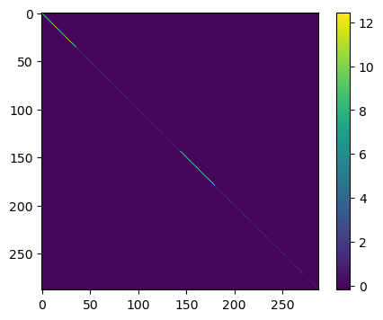
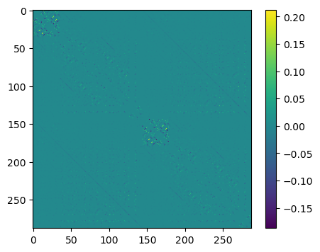
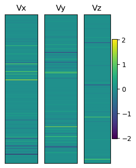
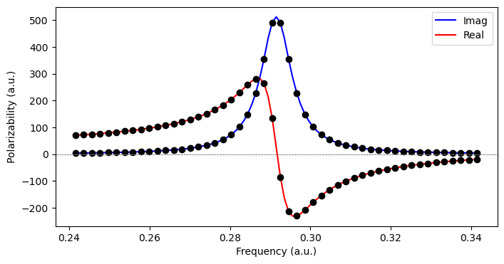

TDDFT response equation#
Linear response TDDFT involves the solution of a non-Hermitian eigenvalue equation which can be written as
From this, excitation energies and transition amplitudes are obtained from the eigenvalues and corresponding eigenvectors, respectively. For historical reasons, this is referred to as the random-phase approximation (RPA) within TDHF theory.
As an example, consider the ethylene molecule:
ethene_xyz = """6
C 0.67759997 0.00000000 0.00000000
C -0.67759997 0.00000000 0.00000000
H 1.21655197 0.92414474 0.00000000
H 1.21655197 -0.92414474 0.00000000
H -1.21655197 -0.92414474 0.00000000
H -1.21655197 0.92414474 0.00000000
"""
You appear to be running in JupyterLab (or JavaScript failed to load for some other reason). You need to install the 3dmol extension:
jupyter labextension install jupyterlab_3dmol
molecule = vlx.Molecule.from_xyz_string(ethene_xyz)
basis = vlx.MolecularBasis.read(molecule, "6-31G")
scf_drv = vlx.ScfRestrictedDriver()
scf_results = scf_drv.compute(molecule, basis)
We can extract the MO energies, number of occupied and unoccupied MOs, and the HOMO-LUMO gap:
mo_energy = scf_results["E_alpha"]
nocc = molecule.number_of_alpha_electrons()
norb = mo_energy.shape[0]
nvirt = norb - nocc
print("Number of orbitals:", len(mo_energy))
print("Number of occupied orbitals:", nocc)
print("Number of virtual orbitals:", nvirt)
print("\nMO energies (au):\n", mo_energy)
print(f"\nHOMO-LUMO gap (eV): {27.2114*(mo_energy[nocc] - mo_energy[nocc-1]):.3f}")
Number of orbitals: 26
Number of occupied orbitals: 8
Number of virtual orbitals: 18
MO energies (au):
[-11.2318428 -11.23036306 -1.03031426 -0.79297209 -0.64755459
-0.57527959 -0.51027799 -0.3664635 0.17010963 0.26253257
0.29520837 0.31109777 0.38857996 0.47929591 0.68491581
0.78814557 0.78870971 0.8870793 0.89030532 0.97978752
1.15705815 1.20987525 1.2392286 1.2517033 1.36026403
1.54571226]
HOMO-LUMO gap (eV): 14.601
Looking at the MOs:
viewer = vlx.OrbitalViewer()
viewer.plot(molecule, basis, scf_drv.mol_orbs)
Eigenstates#
We first perform a reference calculation using LinearResponseEigenSolver, where we calculate the first 12 excited states using a reduced-space Davidson algorithm which can resolve the N lowest eigenvalues (bottom-up).:
lres_drv = vlx.LinearResponseEigenSolver()
rsp_settings = {"nstates": 12}
lres_drv.update_settings(rsp_settings)
lres_out = lres_drv.compute(molecule, basis, scf_results)
The output contains
lres_out.keys()
dict_keys(['eigenvalues', 'eigenvectors_distributed', 'electric_transition_dipoles', 'velocity_transition_dipoles', 'magnetic_transition_dipoles', 'oscillator_strengths', 'rotatory_strengths', 'excitation_details'])
We create a function for printing the results (energy, oscillator strength, transition moment) in a table:
def print_table(lres):
print("State Energy [eV] Osc. str. TM(x) TM(y) TM(z)")
for i in np.arange(len(lres["eigenvalues"])):
e, os, x, y, z = (
27.2114 * lres["eigenvalues"][i],
lres["oscillator_strengths"][i],
lres["electric_transition_dipoles"][i][0],
lres["electric_transition_dipoles"][i][1],
lres["electric_transition_dipoles"][i][2],
)
print(f" {i:2} {e:.3f} {os:8.5f} {x:8.5f} {y:8.5f} {z:8.5f}")
print_table(lres_out)
State Energy [eV] Osc. str. TM(x) TM(y) TM(z)
0 7.933 0.45586 1.53151 0.00000 -0.00000
1 9.578 0.00000 0.00000 0.00000 0.00000
2 9.900 0.00000 -0.00000 -0.00000 0.00000
3 10.030 0.00012 -0.00000 0.00000 -0.02174
4 10.461 0.00000 0.00000 -0.00000 -0.00000
5 11.629 0.00000 -0.00000 -0.00000 -0.00000
6 12.858 0.00000 0.00000 0.00000 -0.00000
7 13.538 0.00000 0.00000 -0.00000 0.00000
8 13.589 0.00000 0.00000 -0.00000 -0.00000
9 14.819 0.00000 0.00000 -0.00000 0.00000
10 14.919 0.72579 -1.40916 -0.00000 -0.00000
11 15.052 1.11817 -0.00000 1.74133 -0.00000
These results were obtained using the solver in VeloxChem, and we will now calculate this explicitly by using the Hessian, overlap matrix, and property gradients.
Electronic Hessian#
The electronic Hessian, \(\mathbf{E}^{[2]}\) reads
For a general hybrid functional, the blocks are constructed as:
For a closed-shell system, the dimension of the \(\mathbf{A}\)- and \(\mathbf{B}\)-blocks of the \(\mathbf{E}^{[2]}\)-matrix equals the number of occupied (spatial) orbitals times the number of virtual orbitals or, in other words
In the limits we retrieve the TDHF blocks (\(c_{\textrm{HF}} = 1\)) and pure TDDFT (\(c_{\textrm{HF}} = 0\)). It can be noted that:
The matrix is Hermitian and has an internal structure in terms of the matrix blocks \(\mathbf{A}\) and \(\mathbf{B}\), but not in the full form
The diagonal elements correspond to differences in energy between the single-excited determinants \(|0_i^a\rangle\) and the reference state \(|0\rangle\)
We get the \(\mathbf{E}^{[2]}\)-matrix from the LinearResponseEigenSolver class object.
lres_drv = vlx.LinearResponseEigenSolver()
E2 = lres_drv.get_e2(molecule, basis, scf_results)
The dimension of the Hessian should be
n = nocc * nvirt
print("Dimension of full Hessian:", 2 * n)
Dimension of full Hessian: 288
Which is verified using .shape
print(E2.shape)
(288, 288)
This is a bit too large to print, but we can visualize the matrix using imshow:
plt.figure(figsize=(5, 4))
plt.imshow(E2)
plt.colorbar()
plt.show()

In order to see the off-diagonal elements better, we subtract the diagonal elements
plt.figure(figsize=(5, 4))
plt.imshow(np.array(E2) - np.array(E2)*np.identity(2 * n))
plt.colorbar()
plt.show()

Matrix elements can be directly accessed, such as that of the \(\pi \rightarrow \pi^{\ast}\) transition
idx = (nocc - 1) * nvirt # index position for (pi,pi*) excitation
print(f'Diagonal element for the (pi,pi*)-excitation: {E2[idx,idx] : .6f} a.u.')
Diagonal element for the (pi,pi*)-excitation: 0.361149 a.u.
Alternatively, we can in principle determine the elements of the \(\mathbf{E}^{[2]}\)-matrix from explicit calculations using orbital energies and two-electron integrals in the MO-basis.
# Orbital energies
orbital_energies = scf_results['E_alpha']
# ERI integrals in physicist's notation
moints_drv = vlx.MOIntegralsDriver()
isis = moints_drv.compute_in_memory(molecule, basis, scf_drv.mol_orbs, "phys_OVOV")
iiss = moints_drv.compute_in_memory(molecule, basis, scf_drv.mol_orbs, "phys_OOVV")
# Determine the specific diagonal matrix element of E[2] explicitly
diag_element = orbital_energies[nocc] - orbital_energies[nocc - 1] +(- isis[nocc - 1,0,nocc - 1,0] + 2 * iiss[nocc - 1,nocc - 1,0,0])
print(f'Diagonal element (explicit calculation): {diag_element : .6f} a.u.')
Diagonal element (explicit calculation): 0.361149 a.u.
Overlap matrix#
The overlap matrix, \(\mathbf{S}^{[2]}\), in the SCF approximation is trivial and equal to
where \(\mathbf{1}\) and the \(\mathbf{1}\) are understood to be the identity and zero matrices, respectively, of the same rank as sub-blocks \(\mathbf{A}\) and \(\mathbf{B}\) in the electronic Hessian. We construct this as
S2 = np.identity(2 * n)
S2[n:, n:] *= -1
Property gradient#
In the SCF approximation, the property gradient, \(\mathbf{V}^{[1]}\), takes the form
We get the \(\mathbf{V}^{\omega,[1]}\)-vector from the LinearResponseSolver class object. We assume the perturbation operator to equal minus the electric dipole moment operator along the \(x\)-axis, i.e., the molecular C\(-\)C axis.
lrs_drv = vlx.LinearResponseSolver()
mu_x = lrs_drv.get_prop_grad("electric dipole", "x", molecule, basis, scf_results)[0]
mu_y = lrs_drv.get_prop_grad("electric dipole", "y", molecule, basis, scf_results)[0]
mu_z = lrs_drv.get_prop_grad("electric dipole", "z", molecule, basis, scf_results)[0]
V1x = -mu_x
V1y = -mu_y
V1z = -mu_z
print("Dimension of V[1] vectors:", V1x.shape[0])
Dimension of V[1] vectors: 288
We can illustrate these vectors as
plt.figure(figsize=(3, 4))
Vmtrx = np.zeros((2 * n, 100))
plt.subplot(131)
plt.title("Vx")
for i in np.arange(100):
Vmtrx[:, i] = V1x
plt.imshow(
Vmtrx, vmin=np.min([V1x, V1y, V1z]), vmax=np.max([V1x, V1y, V1z]), aspect="auto"
)
plt.xticks([])
plt.yticks([])
plt.subplot(132)
plt.title("Vy")
for i in np.arange(100):
Vmtrx[:, i] = V1y
plt.imshow(
Vmtrx, vmin=np.min([V1x, V1y, V1z]), vmax=np.max([V1x, V1y, V1z]), aspect="auto"
)
plt.xticks([])
plt.yticks([])
plt.subplot(133)
plt.title("Vz")
for i in np.arange(100):
Vmtrx[:, i] = V1z
plt.imshow(
Vmtrx, vmin=np.min([V1x, V1y, V1z]), vmax=np.max([V1x, V1y, V1z]), aspect="auto"
)
plt.xticks([])
plt.yticks([])
plt.colorbar()
plt.show()

For the (pi,pi*) excitation we assume the perturbation operator to equal minus the electric dipole moment operator along the \(x\)-axis, i.e., the molecular C\(-\)C axis.
lrs_drv = vlx.LinearResponseSolver()
print('Elements for (pi,pi*)-excitation:')
print(f'(upper) g: {V1x[idx] : .6f}')
print(f'(lower) -g*: {V1x[n + idx] : .6f}')
Elements for (pi,pi*)-excitation:
(upper) g: 2.005214
(lower) -g*: -2.005214
Alternatively, we can in principle determine the elements of the \(\mathbf{V}^{\omega,[1]}\)-vector from explicit calculations using one-electron integrals of the perturbation operator in the MO-basis. The property integrals are available in AO-basis from the ElectricDipoleIntegralsDriver class object and we transfer them to the MO-basis with use of the MO-coefficients.
dipole_drv = vlx.ElectricDipoleIntegralsDriver()
C = scf_results['C_alpha']
dipole_matrices = dipole_drv.compute(molecule, basis)
x_ao = -dipole_matrices.x_to_numpy()
x_mo = np.matmul(C.T, np.matmul(x_ao, C))
# sqrt(2) for consistent normalization
print(f'{x_mo[nocc - 1,nocc]*np.sqrt(2.0) : .6f}')
2.005214
Excitation energies#
Denote the eigenvectors of the generalized eigenvalue equation as \(\mathbf{X}_e\)
where the matrix dimension is \(2n\). We find the set of eigenvalues and eigenvectors by diagonalizing the non-Hermitian matrix \(\left(\mathbf{S}^{[2]}\right)^{-1} \mathbf{E}^{[2]}\)
where \(\boldsymbol{\lambda}\) is a diagonal matrix of dimension \(n\) collecting the eigenvalues with positive index and the columns of \(\mathbf{X}\) store the eigenvectors (\(\mathbf{X}\) is assumed to be nonsingular). This pairing of eigenvalues has its correspondence in the eigenvectors through
The matrix \(\mathbf{X}\) will therefore have the structure
With an appropriate scaling of the eigenvectors \(\mathbf{X}_e\), the non-unitary matrix \(\mathbf{X}\) achieves a simultaneous diagonalization of the two non-commuting matrices \(\mathbf{E}^{[2]}\) and \(\mathbf{S}^{[2]}\) as
For each pair of eigenvectors, the second equation involving the metric of the generalized eigenvalue equation defines which of the two that should be indexed with a positive index. We also emphasize that \(\mathbf{X}^\dagger \neq \mathbf{X}^{-1}\) and for this reason the \(\mathbf{X}_e\)’s are eigenvectors neither of \(\mathbf{E}^{[2]}\) nor of \(\mathbf{S}^{[2]}\), just as the \(\lambda_e\)’s are not the eigenvalues of \(\mathbf{E}^{[2]}\).
The eigenvalues, or excitation energies, can then be calculated by use of np.linalg.eig on \(\left(\mathbf{S}^{[2]}\right)^{-1} \mathbf{E}^{[2]}\). This will return the eigenvalues and eigenvectors, which can then be reordered:
eigs, X = np.linalg.eig(np.matmul(np.linalg.inv(S2), E2))
# Reorder results
idx = np.argsort(eigs)
eigs = np.array(eigs)[idx]
X = np.array(X)[:, idx]
# print first 12 positive eigenvalues:
print(eigs[n : n + 12])
# print(f'Excitation energy (au): {eigs[idx] : .6f}')
print("Reference:\n", lres_out["eigenvalues"])
[0.29153356 0.35199506 0.36380664 0.36860999 0.38443182 0.42735114
0.47252353 0.49752266 0.4993755 0.54458488 0.54825333 0.55314321]
Reference:
[0.29153356 0.35199506 0.36380664 0.36860999 0.38443182 0.42735114
0.47252353 0.49752266 0.4993755 0.54458488 0.54825333 0.55314321]
Intensities#
Transition moments in the SCF approximation take the form
The oscillator strength is then calculated as
def compute_fosc(eigs, X, V1x, V1y, V1z, S2):
fosc = []
for i in range(len(eigs)):
if eigs[i] > 0.0: # only for positive eigenvalues
Xf = X[:, i]
Xf = Xf / np.sqrt(np.matmul(Xf.T, np.matmul(S2, Xf)))
tm = np.dot(Xf, V1x) ** 2 + np.dot(Xf, V1y) ** 2 + np.dot(Xf, V1z) ** 2
fosc.append(tm * 2.0 / 3.0 * eigs[i])
return fosc
fosc = compute_fosc(eigs, X, V1x, V1y, V1z, S2)
print("Oscillator strengths:\n", np.around(fosc[:12], 6))
print("\nReference:\n", np.around(lres_out["oscillator_strengths"], 6))
Oscillator strengths:
[4.558630e-01 0.000000e+00 0.000000e+00 1.160000e-04 0.000000e+00
0.000000e+00 0.000000e+00 0.000000e+00 0.000000e+00 0.000000e+00
7.257950e-01 1.118172e+00]
Reference:
[4.55864e-01 0.00000e+00 0.00000e+00 1.16000e-04 0.00000e+00 0.00000e+00
0.00000e+00 0.00000e+00 0.00000e+00 0.00000e+00 7.25793e-01 1.11817e+00]
Analysis#
We can now compare our excitation energies to experiment, with obtained excitation energies and intensities:
print_table(lres_out)
State Energy [eV] Osc. str. TM(x) TM(y) TM(z)
0 7.933 0.45586 1.53151 0.00000 -0.00000
1 9.578 0.00000 0.00000 0.00000 0.00000
2 9.900 0.00000 -0.00000 -0.00000 0.00000
3 10.030 0.00012 -0.00000 0.00000 -0.02174
4 10.461 0.00000 0.00000 -0.00000 -0.00000
5 11.629 0.00000 -0.00000 -0.00000 -0.00000
6 12.858 0.00000 0.00000 0.00000 -0.00000
7 13.538 0.00000 0.00000 -0.00000 0.00000
8 13.589 0.00000 0.00000 -0.00000 -0.00000
9 14.819 0.00000 0.00000 -0.00000 0.00000
10 14.919 0.72579 -1.40916 -0.00000 -0.00000
11 15.052 1.11817 -0.00000 1.74133 -0.00000
Assigning transitions can be done by considering, e.g.:
The polarization of the transition
Contributing MOs
…
For now we consider the MO amplitudes dominating each transition:
for i in np.arange(len(lres_out["excitation_details"])):
print(f"State {i:2}:", lres_out["excitation_details"][i])
State 0: ['HOMO -> LUMO 0.9893']
State 1: ['HOMO-1 -> LUMO -0.9753']
State 2: ['HOMO-2 -> LUMO 0.9782']
State 3: ['HOMO -> LUMO+1 -0.9966']
State 4: ['HOMO -> LUMO+2 0.9766']
State 5: ['HOMO -> LUMO+3 -0.9895']
State 6: ['HOMO-3 -> LUMO -0.9691', 'HOMO -> LUMO+4 -0.2149']
State 7: ['HOMO -> LUMO+4 0.9710', 'HOMO-3 -> LUMO -0.2150']
State 8: ['HOMO-1 -> LUMO+1 0.9591', 'HOMO-3 -> LUMO+3 -0.2531']
State 9: ['HOMO -> LUMO+5 -0.9904']
State 10: ['HOMO-1 -> LUMO+2 -0.9684']
State 11: ['HOMO-1 -> LUMO+3 0.8945', 'HOMO-3 -> LUMO+1 -0.3767']
We see that the first transition, which has the polarization of the sought state, is strongly dominated by a HOMO-LUMO transition. Looking at the MOs (above), we can see that this is an intense \(\pi \rightarrow \pi^*\) transition. The excitation energy is seen to be just above 10 eV, so quite a bit above experiment (\(\sim\)7.7 eV). This is due to the use of TDHF and the very limited basis set.
Electric-dipole polarizability#
The polarizability is determined from the linear response function according to
Here, \(\hat{\Omega} = \hat{\mu}_\alpha\) and \(\hat{V}^\omega = - \hat{\mu}_\beta\) are associated with the observable and perturbation, respectively.
This linear response function is determined from the RPA matrix
In typical applications, the matrix dimension is large and instead of explicitly constructing the Hessian matrix, we solve the linear response equation with iterative techniques
such that
A reduced-space iterative algorithm for solving the linear response funciton is available from the LinearResponseSolver class object.
lrs_drv = vlx.LinearResponseSolver()
lrs_out = lrs_drv.compute(molecule, basis, scf_results)
The return result lrs_out is a dictonary with the values of the response functions provided from the key response_functions.
lrs_out.keys()
dict_keys(['response_functions', 'solutions'])
alpha_xx = -lrs_out['response_functions'][('x', 'x', 0)]
alpha_yy = -lrs_out['response_functions'][('y', 'y', 0)]
alpha_zz = -lrs_out['response_functions'][('z', 'z', 0)]
print(f"alpha_xx(0): {alpha_xx : .6f}")
print(f"alpha_yy(0): {alpha_yy : .6f}")
print(f"alpha_zz(0): {alpha_zz : .6f}")
alpha_xx(0): 32.985929
alpha_yy(0): 19.268122
alpha_zz(0): 7.201365
The solution vectors (or response vectors) are available from the key solutions, so that we can also determine the the linear response function values from the multiplication of response vectors with property gradients.
Nx = lrs_drv.get_full_solution_vector(lrs_out['solutions'][('x', 0)])
Ny = lrs_drv.get_full_solution_vector(lrs_out['solutions'][('y', 0)])
Nz = lrs_drv.get_full_solution_vector(lrs_out['solutions'][('z', 0)])
print(f"alpha_xx(0): {np.dot(mu_x, Nx) : .6f}")
print(f"alpha_yy(0): {np.dot(mu_y, Ny) : .6f}")
print(f"alpha_zz(0): {np.dot(mu_z, Nz) : .6f}")
alpha_xx(0): 32.985929
alpha_yy(0): 19.268122
alpha_zz(0): 7.201365
In this example, the LinearResponseSolver was using its default settings for operators and frequencies, both of which can be changed. We change the value of the optical frequency from the default zero to 0.0656 a.u. with use of the dictionary rsp_settings.
lrs_drv = vlx.LinearResponseSolver()
rsp_settings = {'frequencies': [0.0656]}
method_settings = {} # Hartree-Fock is default
lrs_drv.update_settings(rsp_settings, method_settings)
lrs_out = lrs_drv.compute(molecule, basis, scf_results)
alpha_xx = -lrs_out['response_functions'][('x', 'x', 0.0656)]
alpha_yy = -lrs_out['response_functions'][('y', 'y', 0.0656)]
alpha_zz = -lrs_out['response_functions'][('z', 'z', 0.0656)]
print(f"alpha_xx(w=0.0656): {alpha_xx : .6f}")
print(f"alpha_yy(w=0.0656): {alpha_yy : .6f}")
print(f"alpha_zz(w=0.0656): {alpha_zz : .6f}")
Alternatively, in our small example the matrices in the RPA equation (\(\mathbf{E}^{[2]}\) and \(\mathbf{S}^{[2]}\)) have been formed explicitly and we can thus determine values of linear response functions by straightforward matrix inverse and multiplication.
omega = 0.0656
alpha_xx = np.dot(mu_x, np.matmul(np.linalg.inv(E2 - omega * S2), mu_x))
alpha_yy = np.dot(mu_y, np.matmul(np.linalg.inv(E2 - omega * S2), mu_y))
alpha_zz = np.dot(mu_z, np.matmul(np.linalg.inv(E2 - omega * S2), mu_z))
print(f"alpha_xx(w=0.0656): {alpha_xx : .6f}")
print(f"alpha_yy(w=0.0656): {alpha_yy : .6f}")
print(f"alpha_zz(w=0.0656): {alpha_zz : .6f}")
alpha_xx(w=0.0656): 34.018986
alpha_yy(w=0.0656): 19.491345
alpha_zz(w=0.0656): 7.244817
Complex polarizability#
As an alternative to calculating the eigenstates, the complex polarizability is determined from the linear response function according to [NRS18]
Here, the linear response equation takes the form
where the phenomenological damping parameter \(\gamma\) is associated with the inverse of the finite lifetime of the excited states in the molecular system. A polarizability calculated in this manner is physically sound for all optical frequencies, be it in the nonresonance or resonence regions of the spectrum. The real and imaginary parts of such complex response functions are related by the Kramers–Kronig relations and typically associated with separate spectroscopies and/or physical phenomena. In the case of the electric-dipole polarizability, the real and imaginary parts are associated with light scattering and absorption, respectively.
We can determine complex response functions by means of the ComplexResponse class object. We consider 50 frequencies within 0.05 a.u. from the \(\pi \rightarrow \pi^{\ast}\) transition:
cpp_drv = vlx.ComplexResponse()
exc = lres_out['eigenvalues'][0]
freqs = np.linspace(exc - 0.05, exc + 0.05, 50)
rsp_settings = {'frequencies': freqs}
cpp_drv.update_settings(rsp_settings, method_settings)
cpp_out = cpp_drv.compute(molecule, basis, scf_results)
alpha_xx = []
for freq in freqs:
alpha_xx.append(-cpp_out['response_functions'][('x', 'x', freq)])
alpha_xx = np.array(alpha_xx)
import matplotlib.pyplot as plt
from scipy.interpolate import interp1d
fig = plt.figure(1,figsize=(8,4))
x = np.arange(exc - 0.05, exc + 0.05, 0.001)
yR = interp1d(freqs, alpha_xx.real, kind = 'cubic')
yI = interp1d(freqs, alpha_xx.imag, kind = 'cubic')
plt.plot(x, yI(x), 'b-', x, yR(x), 'r-')
plt.plot(freqs, alpha_xx.real, 'ko', freqs, alpha_xx.imag, 'ko')
plt.legend(['Imag', 'Real'])
plt.axhline(y = 0, color = '0.5', linewidth = 0.7, dashes = [3,1,3,1])
plt.ylabel('Polarizability (a.u.)')
plt.xlabel('Frequency (a.u.)')
plt.show()
